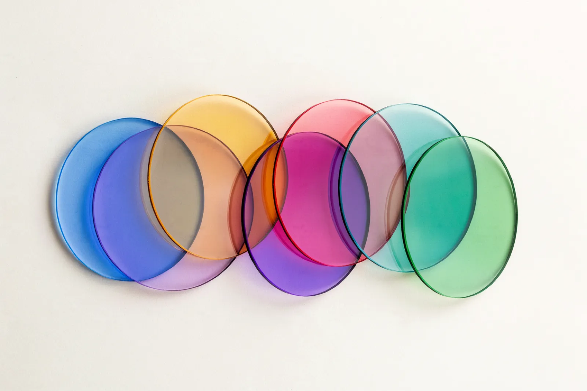

PM Interview Prep · 2026
AI Product Sense
The new PM interview skill: how to answer product questions when the product itself can reason, generate, fail unpredictably, and improve over time.

The bar moved from feature sense to system sense
Traditional product sense
Tests whether you can design a useful product for a real user.
- Users
- Pain points
- Features
- Metrics
AI product sense
Tests whether you can design a useful product when the product can reason, generate, fail unpredictably, and improve over time.
- When AI is the right solution, and when it isn't
- What the model can and can't reliably do
- What happens when the AI is wrong
- How users verify, edit, approve, override
- Quality beyond clicks and retention
- How cost, latency, privacy, safety shape decisions
- How the system improves over time
Can you make product decisions under model uncertainty?
As AI makes prototyping and execution faster, the scarce PM skill moves upstream: choosing the right problem, judging whether AI belongs in the workflow, defining quality, and deciding how much autonomy the system should have. It's not just technical knowledge. It's product judgment under uncertainty.
"The best product managers in the AI era are those who can experiment with models, build with Claude, and fundamentally rethink what 'product' means when code-writing is solved."
The 7 questions behind every AI product sense answer
Run these seven lenses on any AI product sense question. In the answer builder below, each lens carries its own color, so you start to recognize the moves by sight.
Don't just learn the framework — build with it
Steal these lines
Drop these into an interview to signal you think in systems, not features.
12 questions across 3 levels
AI product sense isn't about knowing every model or tool. It's about learning to build when intelligence becomes part of the product surface.
The best candidates won't be the ones who say "add AI" fastest. They'll be the ones who can slow the question down.
Want the full AI-Native PM Interview Playbook?
Everything in this guide, expanded into a complete prep system, free while it's in early access.
- 80+ AI-era PM interview questions
- Answer frameworks & worked examples
- Interactive answer drills
- Evals & AI product judgment examples
Tell us the hardest PM interview question you've been asked yet.